The scarab's game is a part of the Tavern where you can gamble pharaoh's tokens or noble's tokens on slot machine spins which yield ancient coins. These ancient coins can then be used to open the pharaoh's vault to obtain random rewards. These rewards include sigils of prophecy which are used to release unique beasts.
Scarab's Game
{kind=link}
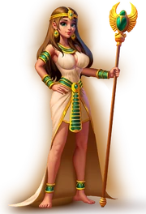
{kind=link}
Skye, the game's host
The scarab's game is a slot machine which uses pharaoh's tokens or noble's tokens for spins. You get 10 noble's tokens per day for free and can buy additional pharaoh's tokens in the scarab shop below. There are three reels which can show one of four symbols which have the following base values:
| Symbol | Base value |
|---|---|
| Ceremonial fire | 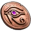 10 ancient coins |
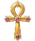 Ankh |
20 ancient coins |
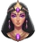 Queen |
50 ancient coins |
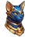 Cat goddess |
100 ancient coins |
{kind=link}
{kind=link}
{kind=link}
{kind=link}
{kind=link}
The amount of ancient coins you obtain from a spin is the sum of the values of the symbols shown in the middle row. If a symbol appears twice in the row, both of their values are multiplied by 3. If a symbol appears three times in the row, all of their values are multiplied by 9. If you use more than one token on the spin, the amount of ancient coins you obtain is multiplied by the number of tokens spent. The chances for each combo (including all permutations of the symbols) and the corresponding payouts per token are as follows:
(Note that each permutation of symbols is not equally likely to show up. For example, the combination has a 60% chance of appearing while the other two combinations and each have only a 20% chance of appearing.)
In addition, there is a catchup mechanism in place that tracks how often each combo has appeared for a player and accordingly adjusts the chances above such that in the long run each combo appears with the correct frequency. The number of tickets used is not taken into account, when the catchup mechanic is evaluated. The multiplication by the number of tickets takes place, after the result got determined.
Pharaoh's Vault
When you have collected 5000 ancient coins, you can use them to open the pharaoh's vault which will give you five rewards. Possible rewards are currencies, jewel chests, celestial chests, lost inscriptions and sigils of prophecy. Each reward also gives you scarabs depending on the type and amount drawn:
scarab gain = number of items * reward scarab multiplier
Rewards
The chance for a given reward is a pooled random where N is the total number of rewards in the reward pool (ranging between N=77 and N=109 depending on your character level, campaign stars and oracle level). The number of drawn items is uniformly random within your current range for that reward.
| Reward | Chance | Range | Scarab multiplier | Requirement |
|---|---|---|---|---|
| Unique Rewards | ||||
| sigil of prophecy | 6 in 96* (first beast) 6 in 192* |
1 | 2000 | |
| soul embers | 1 in 31* | 8 | 125 | |
| 1 in 16* | 5 | 60 | ||
| lost inscriptions | 40 in N | 5–15 to 56–287** | 4.3 | |
| Jewel Chests | ||||
| 3 in N | 1–2 to 1–5** | 500 | 1-189 campaign stars | |
| 3 in N | 1–2 to 1–5** | 600 | 1-318 campaign stars | |
| 1 in N | 1–2 to 1–5** | 800 | ||
| 1 in N | 1–2 to 1–5** | 1000 | 100 campaign stars | |
| 1 in N | 1–2 to 1–5** | 1000 | 145 campaign stars | |
| 1 in N | 1–2 to 1–5** | 1000 | 190 campaign stars | |
| 1 in N | 1–2 to 1–5** | 1000 | 319 campaign stars | |
| Celestial Chests | ||||
| 3 in N | 1–2 to 1–5** | 500 | oracle level 1-200 | |
| 2 in N | 1–2 to 1–5** | 600 | oracle level 1-278 | |
| 1 in N | 1–2 to 1–5** | 800 | ||
| 1 in N | 1–2 to 1–5** | 1000 | oracle level 98 | |
| 1 in N | 1–2 to 1–5** | 1000 | oracle level 149 | |
| 1 in N | 1–2 to 1–5** | 1000 | oracle level 201 | |
| 1 in N | 1–2 to 1–5** | 1000 | oracle level 279 | |
| Resources | ||||
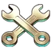 tools |
3 in N | 500–1000 to 1300–1800** | 0.5 | |
| pickaxes | 5 in N | 1–1 to 1–5** | 500 | |
| emblems of valor | 7 in N | 30–140 to 142–382** | 2 | |
| blueprints | 5 in N | 50–150 to 250-550** | 5 | |
| expedition tokens | 2 in N | 300–1000 to 500-1500** | 0.4 | |
| guild coins | 3 in N | 510-1700 to 850-2550** | 0.25 | |
| 5 in N | 10–26 to 34–74** | 30 | ||
| 5 in N | 10–50 to 61–121** | 3 | 70 campaign stars | |
| emblems of brotherhood | 7 in N | 30–140 to 142–382** | 2 | char level 200 |
| 5 in N | 10–50 to 61–121** | 3 | char level 200 | |
| eclipse stones | 5 in N | 1-2 to 1-5** | 500 | char level 100 |
{kind=link}
{kind=link}
{kind=link}
{kind=link}
{kind=link}
{kind=link}
{kind=link}
{kind=link}
{kind=link}
{kind=link}
{kind=link}
* sigil of prophecy, soul ember and twilight hourglass drops are determined independently (in this order) and before the other reward drops
** range depends on your scarab level (see below)
Reward Ranges
All reward ranges depend on your scarab level and cap after a certain level. Currency reward ranges have irregular patterns, therefore the following increases per level are approximate:
| Reward | Level 1 | Level 2 | Level 3 | Level 4 | Level 5 | Level 6+ | Cap |
|---|---|---|---|---|---|---|---|
| lost inscriptions | 6–17 | 6–19 | 6–21 | 6–23 | 7–25 | +0.25/+1 per level | level 201 |
| tools | 500–1000 | 504–1004 | 508–1008 | 512–1012 | 516–1016 | +4/+4 per level | level 201 |
| pickaxes | 1–1 | 1–2 | 1–3 | 1–4 | 1–5 | +0/+0 per level | level 5 |
| emblems of valor | 30–140 | 30–140 | 30–140 | 30–140 | 40–150 | +3/+6 per level | level 42 |
| blueprints | 50–150 | 51–152 | 52–154 | 53–156 | 54–158 | +1/+2 per level | level 201 |
| expedition tokens | 300–1000 | 300–1050 | 300–1100 | 350–1100 | 350–1150 | +15/+35 per level | level 15 |
| guild coins | 510–1700 | 510–1785 | 510–1870 | 595–1870 | 595–1955 | +25/+60 per level | level 15 |
| 10–26 | 14–34 | 18–42 | 22–50 | 26–58 | +4/+8 per level | level 7 | |
| 10–50 | 10–50 | 10–50 | 10–50 | 10–50 | +1/+2 per level | level 42 | |
| emblems of brotherhood | 30–140 | 30–140 | 30–140 | 30–140 | 40–150 | +3/+6 per level | level 42 |
| 10–50 | 10–50 | 10–50 | 10–50 | 10–50 | +1/+2 per level | level 42 | |
| eclipse stones | 1–2 | 1–2 | 1–2 | 1–2 | 1–2 | +0/+1 per level | level 8 |
Jewel and celestial chests follow a simpler pattern and cap at latest at scarab level 11:
| Reward | Level 1 | Level 2 | Level 3 | Level 4 | Level 5 | Level 6 | Level 7 | Level 8 | Level 9 | Level 10 | Level 11+ |
|---|---|---|---|---|---|---|---|---|---|---|---|
| 1–2 | 1–3 | 1–4 | 1–5 | 1–5 | 1–5 | 1–5 | 1–5 | 1–5 | 1–5 | 1–5 | |
| 1–2 | 1–2 | 1–3 | 1–4 | 1–5 | 1–5 | 1–5 | 1–5 | 1–5 | 1–5 | 1–5 | |
| 1–2 | 1–2 | 1–2 | 1–3 | 1–4 | 1-5 | 1–5 | 1–5 | 1–5 | 1–5 | 1–5 | |
| 1–2 | 1–2 | 1–2 | 1–2 | 1–2 | 1–3 | 1–4 | 1-5 | 1–5 | 1–5 | 1–5 | |
| 1–2 | 1–2 | 1–2 | 1–2 | 1–2 | 1–2 | 1–2 | 1–2 | 1–3 | 1–4 | 1-5 | |
| 1–2 | 1–2 | 1–2 | 1–2 | 1–2 | 1–2 | 1–2 | 1–2 | 1–3 | 1–4 | 1-5 | |
| 1–2 | 1–2 | 1–2 | 1–2 | 1–2 | 1–2 | 1–2 | 1–2 | 1–3 | 1–4 | 1-5 |
| Reward | Level 1 | Level 2 | Level 3 | Level 4 | Level 5 | Level 6 | Level 7 | Level 8 | Level 9 | Level 10 | Level 11+ |
|---|---|---|---|---|---|---|---|---|---|---|---|
| 1–2 | 1–3 | 1–4 | 1–5 | 1–5 | 1–5 | 1–5 | 1–5 | 1–5 | 1–5 | 1–5 | |
| 1–2 | 1–2 | 1–3 | 1–4 | 1–5 | 1–5 | 1–5 | 1–5 | 1–5 | 1–5 | 1–5 | |
| 1–2 | 1–2 | 1–2 | 1–3 | 1–4 | 1-5 | 1–5 | 1–5 | 1–5 | 1–5 | 1–5 | |
| 1–2 | 1–2 | 1–2 | 1–2 | 1–2 | 1–3 | 1–4 | 1-5 | 1–5 | 1–5 | 1–5 | |
| 1–2 | 1–2 | 1–2 | 1–2 | 1–2 | 1–2 | 1–2 | 1–2 | 1–3 | 1–4 | 1-5 | |
| 1–2 | 1–2 | 1–2 | 1–2 | 1–2 | 1–2 | 1–2 | 1–2 | 1–3 | 1–4 | 1-5 | |
| 1–2 | 1–2 | 1–2 | 1–2 | 1–2 | 1–2 | 1–2 | 1–2 | 1–3 | 1–4 | 1-5 |
Sigils of Prophecy
{kind=link}
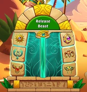
{kind=link}
Release a beast
There are six different sigils of prophecy:
| Icon | Name | Icon | Name |
|---|---|---|---|
| sun sigil | moon sigil | ||
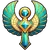 |
wing sigil | 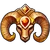 |
horn sigil |
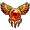 |
talon sigil | 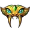 |
fang sigil |
{kind=link}
{kind=link}
{kind=link}
{kind=link}
{kind=link}
When you have collected all six sigils of prophecy from the pharaoh's vault, you can release a unique beast.
Scarab's Shop
Supplies
In the supplies shop, you can exchange expedition tokens for pharaoh's tokens which can be used in the scarab's game:
| Offer | Price | Alternative price |
|---|---|---|
| 5 pharaoh's tokens | 3,000 expedition tokens | 300 gems |
| 20 pharaoh's tokens | 10,000 expedition tokens | 1,000 gems |
{kind=link}
Monthly pass
Before daily and weekly deals are shown, the monthly pass is offered:
| Monthly Pass 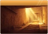 |
|---|
| 20 pharaoh's tokens |
| +2 pharaoh's tokens per day |
| 1 pharaoh's tokens for all guild members |
| Price: * |
{kind=link}
* price depends on your platform
Daily deals
When the monthly pass has been purchased, the following daily deals are shown:
| Crypt Spoils 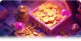 |
Temple Relics 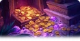 |
Immortal Treasure 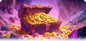 |
|---|---|---|
| 1,700 guild coins | 3,400 guild coins | 8,500 guild coins |
| 1,000 expedition tokens | 2,000 expedition tokens | 5,000 expedition tokens |
| 2 pharaoh's tokens | 4 pharaoh's tokens | 10 pharaoh's tokens |
| 1 pickaxes | 2 pickaxes | 5 pickaxes |
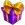 1 mystery box |
2 mystery boxes | 3 mystery boxes |
| Price: * | Price: * | Price: * |
{kind=link}
{kind=link}
{kind=link}
{kind=link}
* price depends on your platform
Weekly deals
When the monthly pass has been purchased, also the following weekly deals are shown:
| Golden Sarcophagus 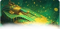 |
Royal Tomb 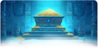 |
|---|---|
| 17,000 guild coins | 34,000 guild coins |
| 10,000 expedition tokens | 20,000 expedition tokens |
| 12 pharaoh's tokens | 24 pharaoh's tokens |
| 10 pickaxes | 20 pickaxes |
| 1 pharaoh's tokens for all guild members | 2 pharaoh's tokens for all guild members |
| 4 mystery boxes | 6 mystery boxes |
| Price: * | Price: * |
{kind=link}
{kind=link}
* price depends on your platform
Scarab Level
With every reward drawn from the pharaoh's vault you also earn scarabs. When you have gained enough scarabs, your scarab level increases. Scarab level 2 requires 40,000 scarabs. Each subsequent scarab level requires 4,000 more scarabs than the previous level. At certain scarab level increments, you get permanent bonuses to miner, mechanical fury, firestone finder, raining gold and hero attributes:
{kind=link}
Bonuses marked with * are additive per upgrade level, the other bonuses are multiplicative per upgrade level. The maximum scarab level is 201.
Scarab Milestones
While you are collecting scarabs, you will receive additional rewards at certain scarab milestones:
| Milestone | Requirement | Reward | Type |
|---|---|---|---|
| 1 | 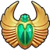 1080 scarabs |
1000 ancient coins | currency |
| 2 | 2430 scarabs | 3400 guild coins | currency |
| 3 | 4050 scarabs | 2000 expedition tokens | currency |
| 4 | 5940 scarabs | 2000 ancient coins | currency |
| 5 | 8100 scarabs | 6800 guild coins | currency |
| 6 | 10530 scarabs | 4000 expedition tokens | currency |
| 7 | 13230 scarabs | stars 1-99: stars 100-144: stars 145-189: stars 190-318: stars 319-: |
chest |
| 8 | 16200 scarabs | level 60-65: level 66-129: level 130-199: oracle 1-97: oracle 98-148: oracle 149-200: oracle 201-278: oracle 279-: |
chest |
| 9 | 19440 scarabs | 3 pharaoh's tokens | currency |
| 10 | 22950 scarabs | currency | |
| 11 | 26730 scarabs | 3000 ancient coins | currency |
| 12 | 30780 scarabs | 10200 guild coins | currency |
| 13 | 35100 scarabs | 6000 expedition tokens | currency |
| 14 | 39690 scarabs | stars 1-99: stars 100-144: stars 145-189: stars 190-318: stars 319-: |
chest |
| 15 | 44550 scarabs | level 60-65: level 66-129: level 130-199: oracle 1-97: oracle 98-148: oracle 149-200: oracle 201-278: oracle 279-: |
chest |
| 16 | 49680 scarabs | 4000 ancient coins | currency |
| 17 | 55080 scarabs | 5 pharaoh's tokens | currency |
| 18 | 60750 scarabs | stars 1-99: stars 100-144: stars 145-189: stars 190-318: stars 319-: |
chest |
| 19 | 66690 scarabs | level 60-65: level 66-129: level 130-199: oracle 1-97: oracle 98-148: oracle 149-200: oracle 201-278: oracle 279-: |
chest |
| 20 | 72900 scarabs | 5 soul embers | currency |
| 21-49 | +(7000+500*(milestone-21)) scarabs per milestone |
5000 ancient coins | currency |
| 50- | +21000 scarabs per milestone |
5000 ancient coins | currency |
{kind=link}
The milestone counter resets on the 21st of each month.